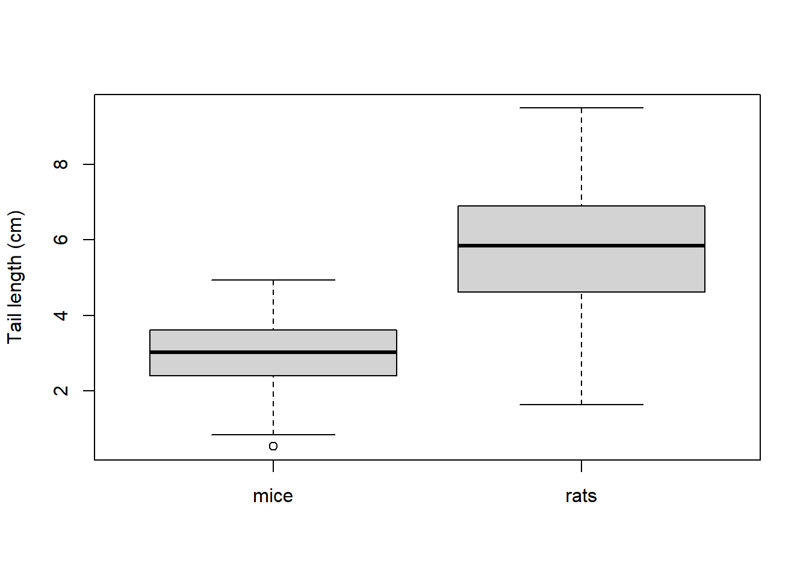
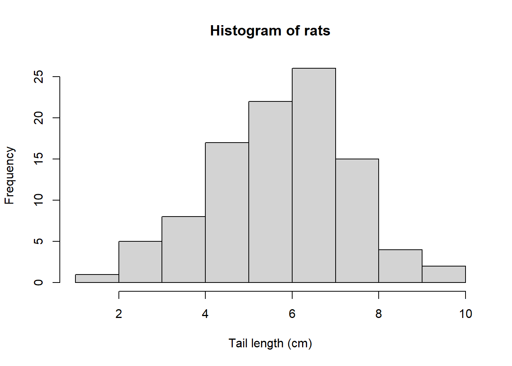
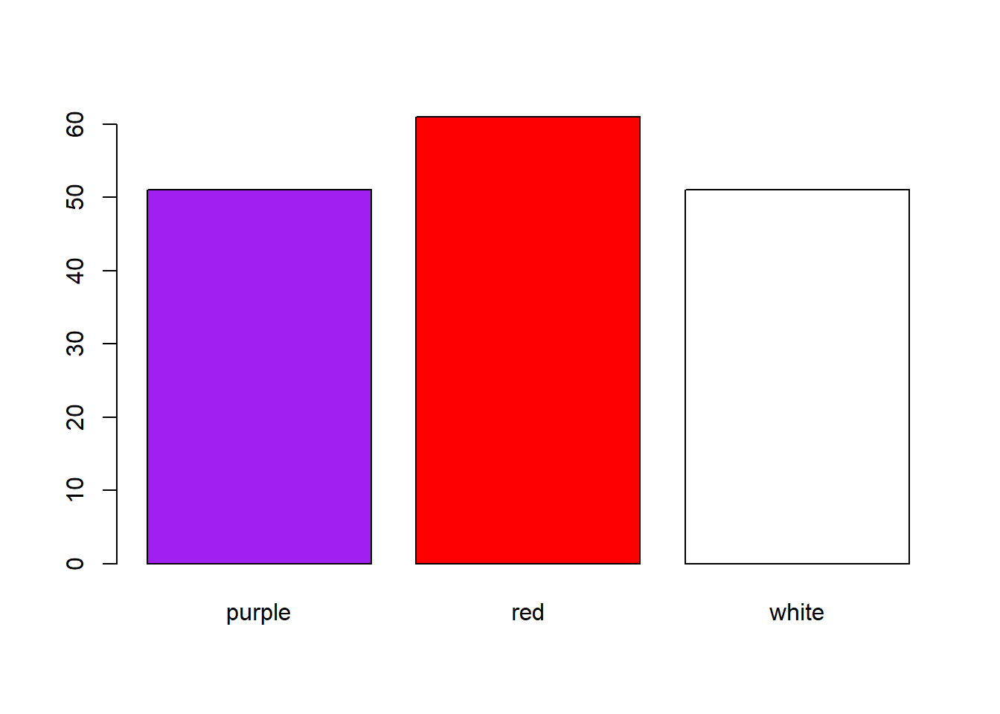

rats <- rnorm(n = 100, mean = 5.5, sd = 1.5)
mice <- rnorm(n = 100, mean = 3, sd = 1)Chapter 2: Data exploration and data types
If you have some data, say a variable describing observations of 100 objects (e.g. tail length of 100 rats), you may wish to explore these values to be able to say something about these data.
That is, you may wish to describe the data using descriptive statistics.
Before we start, let’s prepare the packages and data we will be using in this chapter:
Box 3. Generate normally distributed data
Function rnorm() allows you to generate data of defined sample size (n), mean and standard deviation, which come from the Normal distribution. Check its help page.
Data explotarion
Descriptive statistics
The data are here:
rats [1] 6.796083 4.170613 4.783225 6.929806 4.376357 5.273160 5.712072 5.713873
[9] 6.190753 8.468905 3.691751 3.916548 5.476451 2.646348 6.458037 5.398193
[17] 3.015756 5.528631 6.186298 5.092104 5.939548 3.637312 5.198228 2.975468
[25] 6.183407 8.421669 7.421964 6.410697 5.832667 7.455527 6.547315 3.520392
[33] 5.248992 6.536295 3.332991 4.861420 2.793825 4.623205 5.082376 9.072804
[41] 4.321208 7.471051 6.212292 3.361641 5.565837 4.157670 6.972349 7.611701
[49] 5.278543 7.522924 5.404851 2.572802 4.549788 7.013895 7.960317 4.986194
[57] 6.450677 7.725027 7.795105 7.239030 5.590157 6.574127 7.360621 8.737300
[65] 5.835315 6.919135 6.098068 4.493428 6.510050 4.079646 6.880770 6.836879
[73] 5.857663 5.289927 6.259963 4.444286 6.312717 9.489859 8.138357 7.332058
[81] 6.881108 4.923174 4.084242 5.990303 7.819691 7.161581 6.857164 1.643913
[89] 4.569812 6.651721 5.499332 3.806127 6.997564 7.318023 5.030592 6.749097
[97] 4.615502 2.981701 6.276756 4.828576First, we need to know the size of the data, i.e. number of observations (n).
length(rats)[1] 100Second, we are interested is the central tendency, i.e. certain middle value around which the data are located. This is provided by the median. Which is the middle value1 of the ordered data in the dataset from the lowest to the highest value. Here:
median(rats)[1] 5.846489Third, we need to know the “spread of the data”. A simple characteristic is range (minimum and maximum):
range(rats)[1] 1.643913 9.489859However, the minima and maxima may be affected by outliers and extremes. While it is useful to know them, we may also prefer some more robust characteristics. This comes with quartiles. Quartiles are 25% and 75% quantiles. XX%-quantile refers to a value compared to which XX% of other observations are lower. In our case, this is the first quartile (25%) and the third quartile (75%). The second (50%) quartile is the median:
quantile(rats, probs = c(0.25, 0.50, 0.75)) 25% 50% 75%
4.621279 5.846489 6.890615 Visual exploration
These descriptive statistics can be summarized graphically in the form of boxplot. That is very useful for comparisons between different datasets (e.g. comparison of mouse tail length with a similar dataset on rats):
boxplot(mice, rats,
ylab = 'Tail length (cm)',
names = c('mice', 'rats'))
Box 4. Boxplots - how to read them
The bold lines in boxes represent medians, boxes represent quartiles (i.e. 25 and 75% quantiles) and the lines extending from the box boundaries (whiskers) represent the range or non-outlier range of values, whichever is smaller. The non-outlier range is defined as the interval between (25% quantile) 1.5 × interquartile range) and (75% quantile + 1.5 × interquartile range). Any point outside this interval is considered an outlier and is depicted separately.2
Another useful type of plot is the histogram. Histogram is very useful for displaying data distributions (but less so for comparisons between different datasets). To plot a histogram, values of the variable are assigned into intervals (called also bins). Numbers of observation (frequency) within each bin is then plotted on in the graph.
hist(rats,
xlab = 'Tail length (cm)')
Types of data
The data on mouse tail length we have explored are called data on ratio scale. Several other types of data can be defined on the basis of their properties. These are summarized in Table 1.1. In ratio-scale and interval data, further distinction can be made between continuous and discrete data but that makes little difference for practical computation.
| Data type | Criteria | Possible math operations | Examples | Object class in R |
|---|---|---|---|---|
| Ratio scale data | constant intervals between values, meaningful zero | + - * / | length, mass, temperature in K | numeric |
| Interval scale data | constant intervals between values, zero not meaningful | + - | temperature in °C | numeric |
| Ordinal data (semi-quantitative) | variable intervals between values | comparison of values (< >) | exam grades, Braun-Blanquet cover scale | numeric (but may require conversion) |
| Categorical data | non-numeric values | none | colours, sex, species identity | character, factor |
Categorical variables cannot be explored by the methods described above. Instead, frequencies of individual categories can be summarized in a table, or a barplot can be used to illustrate the data graphically.
Consider for example 163 bean plant individuals with flowers of three colours: white, red, purple:
beans <- sample(
x = c('white', 'red', 'purple'),
size = 163,
replace = T) |>
table()
barplot(beans, col = c('purple', 'red', 'white'))
Box 5. R Basics
Installation
- R can be downloaded from here: https://cloud.r-project.org/
- R Studio can be downloaded from here: https://rstudio.com/products/rstudio/download/#download
R Project
- Very useful approach to keep your disc/storage tidy. You “root” the project into a specified folder (
working directory), where you also store the data you need, and all the scripts related to a single task - e.g., this course, data and analysis for a paper.
Packages
- Installation:
install.packages('YourFavouritePackage') - Calling it from library (when you need some function from it):
library(YourFavouritePackage)
Import data
- comma separated values:
read.csv(),read.csv2()(in case you use decimal comma) - text files:
read.txt - more generic function:
read.delim(),read.delim2(),read.table() - Excel:
read_excel()from thereadxlpackage
Exercises
Solutions will be added after the practicals
- Calculate 5 + 3 and save the result in an object; then display its content.
- Create a vector containing six numbers of your choice.
- Display the 4th value of the vector.
- Change the 5th value of the vector to
NA. - Display the path of the working directory.
- Display the help for the function boxplot.
- Import the People dataset (
people.xlsx) into R. Try importing using thereadxl::read_excel()function or by window-based upload. - Summarize the data.
- Display the class of the R object of the imported data and of the variables eye.color and height.
- Compute the median, range, and quartiles of height of all people.
- Create a new data frame containing just data on males.
- Compute median height for males and females.
- Plot a histogram of all height data.
- Plot a box plot of heights comparing males and females.
- Export both plots to Word.
Tasks for independent work:
- Compute median height for brown and blue-eyed persons.
- Plot a box plot of heights comparing brown and blue-eyed persons.